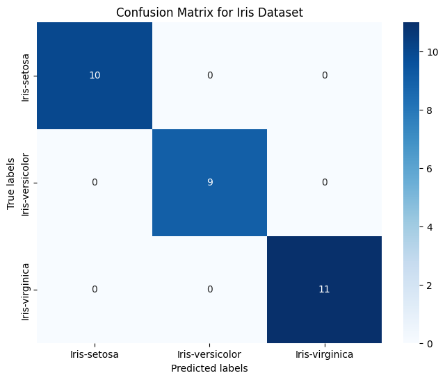

Iris backpropagation#
import pandas as pd
import numpy as np
import matplotlib.pyplot as plt
from sklearn.model_selection import train_test_split
from sklearn.preprocessing import MinMaxScaler
from sklearn.preprocessing import StandardScaler
from sklearn.neural_network import MLPClassifier
from sklearn.metrics import accuracy_score
# from sklearn.metrics import plot_confusion_matrix
from sklearn.metrics import confusion_matrix
from sklearn.metrics import classification_report
from sklearn.model_selection import GridSearchCV
import seaborn as sns
import pickle
datairis="https://raw.githubusercontent.com/cindylmr19/dataset/main/iris.csv"
iris=pd.read_csv(datairis)
iris.sample(150)
| sepallength | sepalwidth | petallength | petalwidth | class | |
|---|---|---|---|---|---|
| 149 | 5.9 | 3.0 | 5.1 | 1.8 | Iris-virginica |
| 143 | 6.8 | 3.2 | 5.9 | 2.3 | Iris-virginica |
| 132 | 6.4 | 2.8 | 5.6 | 2.2 | Iris-virginica |
| 110 | 6.5 | 3.2 | 5.1 | 2.0 | Iris-virginica |
| 140 | 6.7 | 3.1 | 5.6 | 2.4 | Iris-virginica |
| ... | ... | ... | ... | ... | ... |
| 56 | 6.3 | 3.3 | 4.7 | 1.6 | Iris-versicolor |
| 114 | 5.8 | 2.8 | 5.1 | 2.4 | Iris-virginica |
| 80 | 5.5 | 2.4 | 3.8 | 1.1 | Iris-versicolor |
| 33 | 5.5 | 4.2 | 1.4 | 0.2 | Iris-setosa |
| 124 | 6.7 | 3.3 | 5.7 | 2.1 | Iris-virginica |
150 rows × 5 columns
iris_copy = iris.copy()
iris_copy.isnull().sum()
sepallength 0
sepalwidth 0
petallength 0
petalwidth 0
class 0
dtype: int64
iris_copy = iris_copy.replace('?',np.nan)
iris_copy.isnull().sum()
sepallength 0
sepalwidth 0
petallength 0
petalwidth 0
class 0
dtype: int64
iris_copy.info()
<class 'pandas.core.frame.DataFrame'>
RangeIndex: 150 entries, 0 to 149
Data columns (total 5 columns):
# Column Non-Null Count Dtype
--- ------ -------------- -----
0 sepallength 150 non-null float64
1 sepalwidth 150 non-null float64
2 petallength 150 non-null float64
3 petalwidth 150 non-null float64
4 class 150 non-null object
dtypes: float64(4), object(1)
memory usage: 6.0+ KB
data1 = iris.drop(columns=['class'])
data1.head(150)
| sepallength | sepalwidth | petallength | petalwidth | |
|---|---|---|---|---|
| 0 | 5.1 | 3.5 | 1.4 | 0.2 |
| 1 | 4.9 | 3.0 | 1.4 | 0.2 |
| 2 | 4.7 | 3.2 | 1.3 | 0.2 |
| 3 | 4.6 | 3.1 | 1.5 | 0.2 |
| 4 | 5.0 | 3.6 | 1.4 | 0.2 |
| ... | ... | ... | ... | ... |
| 145 | 6.7 | 3.0 | 5.2 | 2.3 |
| 146 | 6.3 | 2.5 | 5.0 | 1.9 |
| 147 | 6.5 | 3.0 | 5.2 | 2.0 |
| 148 | 6.2 | 3.4 | 5.4 | 2.3 |
| 149 | 5.9 | 3.0 | 5.1 | 1.8 |
150 rows × 4 columns
# Get features and Target
X = iris_copy[['sepallength', 'sepalwidth', 'petallength', 'petalwidth']]
y = iris_copy ['class']
#Split data into train and test data
X_train, X_test, y_train, y_test = train_test_split(X, y, test_size=0.2, random_state = 42)
sc=StandardScaler()
scaler = sc.fit(X_train)
X_train_scaled = scaler.transform(X_train)
X_test_scaled = scaler.transform(X_test)
# Menyimpan model ke file
with open('preposcesing.pkl', 'wb') as file:
pickle.dump(scaler, file)
X_train_scaled.shape
(120, 4)
X_train_scaled
array([[-1.47393679, 1.22037928, -1.5639872 , -1.30948358],
[-0.13307079, 3.02001693, -1.27728011, -1.04292204],
[ 1.08589829, 0.09560575, 0.38562104, 0.28988568],
[-1.23014297, 0.77046987, -1.21993869, -1.30948358],
[-1.7177306 , 0.32056046, -1.39196294, -1.30948358],
[ 0.59831066, -1.25412249, 0.72966956, 0.95628954],
[ 0.72020757, 0.32056046, 0.44296246, 0.42316645],
[-0.74255534, 0.99542457, -1.27728011, -1.30948358],
[-0.98634915, 1.22037928, -1.33462153, -1.30948358],
[-0.74255534, 2.34515281, -1.27728011, -1.44276436],
[-0.01117388, -0.80421307, 0.78701097, 0.95628954],
[ 0.23261993, 0.77046987, 0.44296246, 0.55644722],
[ 1.08589829, 0.09560575, 0.5576453 , 0.42316645],
[-0.49876152, 1.8952434 , -1.39196294, -1.04292204],
[-0.49876152, 1.44533399, -1.27728011, -1.30948358],
[-0.37686461, -1.47907719, -0.01576889, -0.24323741],
[ 0.59831066, -0.57925837, 0.78701097, 0.42316645],
[ 0.72020757, 0.09560575, 1.01637665, 0.82300877],
[ 0.96400139, -0.12934896, 0.38562104, 0.28988568],
[ 1.69538284, 1.22037928, 1.36042516, 1.75597417],
[-0.13307079, -0.35430366, 0.2709382 , 0.15660491],
[ 2.18297047, -0.12934896, 1.64713226, 1.22285108],
[-0.2549677 , -0.12934896, 0.44296246, 0.42316645],
[-0.86445224, 0.99542457, -1.33462153, -1.30948358],
[ 2.30486738, -0.57925837, 1.70447368, 1.08957031],
[-0.01117388, -0.80421307, 0.21359679, -0.24323741],
[-0.74255534, 0.77046987, -1.33462153, -1.30948358],
[-0.98634915, 0.99542457, -1.39196294, -1.17620281],
[-0.86445224, 1.67028869, -1.04791443, -1.04292204],
[-0.98634915, -2.37889602, -0.13045173, -0.24323741],
[ 0.59831066, -0.80421307, 0.67232814, 0.82300877],
[-1.23014297, 0.77046987, -1.04791443, -1.30948358],
[-0.98634915, -0.12934896, -1.21993869, -1.30948358],
[-0.86445224, 0.54551516, -1.16259727, -0.90964127],
[-0.2549677 , -0.80421307, 0.2709382 , 0.15660491],
[-0.86445224, 0.77046987, -1.27728011, -1.30948358],
[-0.13307079, -0.12934896, 0.2709382 , 0.02332414],
[ 2.30486738, 1.67028869, 1.70447368, 1.35613185],
[-1.47393679, 0.32056046, -1.33462153, -1.30948358],
[ 0.47641375, -0.35430366, 0.32827962, 0.15660491],
[-0.13307079, -1.25412249, 0.72966956, 1.08957031],
[-0.37686461, 2.57010752, -1.33462153, -1.30948358],
[ 0.23261993, -0.12934896, 0.61498672, 0.82300877],
[-0.01117388, -0.80421307, 0.78701097, 0.95628954],
[ 0.23261993, -1.9289866 , 0.15625537, -0.24323741],
[-0.49876152, -0.12934896, 0.44296246, 0.42316645],
[ 0.47641375, 0.77046987, 0.95903523, 1.48941263],
[-0.37686461, -1.7040319 , 0.15625537, 0.15660491],
[-0.49876152, 1.8952434 , -1.16259727, -1.04292204],
[-0.98634915, -1.7040319 , -0.24513457, -0.24323741],
[ 0.72020757, -0.80421307, 0.90169381, 0.95628954],
[-0.98634915, 0.54551516, -1.33462153, -1.30948358],
[-0.98634915, 0.32056046, -1.44930436, -1.30948358],
[-0.37686461, -1.47907719, 0.04157253, -0.10995664],
[ 1.08589829, -0.12934896, 0.72966956, 0.68972799],
[-1.10824606, 0.09560575, -1.27728011, -1.44276436],
[-0.01117388, -0.57925837, 0.78701097, 1.6226934 ],
[-0.98634915, 0.77046987, -1.27728011, -1.30948358],
[-0.98634915, 0.99542457, -1.21993869, -0.7763605 ],
[ 0.11072303, 0.32056046, 0.61498672, 0.82300877],
[-0.86445224, -1.25412249, -0.41715882, -0.10995664],
[ 1.32969211, 0.32056046, 1.13105949, 1.48941263],
[ 0.23261993, -0.80421307, 0.78701097, 0.55644722],
[ 0.35451684, -1.02916778, 1.07371807, 0.28988568],
[ 2.30486738, -0.12934896, 1.36042516, 1.48941263],
[-0.37686461, -1.25412249, 0.15625537, 0.15660491],
[-1.7177306 , -0.35430366, -1.33462153, -1.30948358],
[-1.83962751, -0.12934896, -1.50664578, -1.44276436],
[ 0.23261993, -1.9289866 , 0.72966956, 0.42316645],
[ 1.69538284, 0.32056046, 1.30308374, 0.82300877],
[-1.47393679, 0.09560575, -1.27728011, -1.30948358],
[-0.86445224, 0.99542457, -1.33462153, -1.17620281],
[-1.7177306 , -0.12934896, -1.39196294, -1.30948358],
[ 0.59831066, -1.25412249, 0.67232814, 0.42316645],
[ 0.59831066, 0.77046987, 1.07371807, 1.6226934 ],
[-1.47393679, 0.77046987, -1.33462153, -1.17620281],
[ 1.2077952 , -0.12934896, 1.01637665, 1.22285108],
[ 0.59831066, 0.54551516, 1.30308374, 1.75597417],
[-1.35203988, 0.32056046, -1.39196294, -1.30948358],
[ 0.35451684, -0.35430366, 0.5576453 , 0.28988568],
[ 0.84210448, -0.57925837, 0.50030388, 0.42316645],
[ 0.47641375, -0.57925837, 0.61498672, 0.82300877],
[ 1.45158902, 0.32056046, 0.5576453 , 0.28988568],
[ 0.72020757, 0.32056046, 0.90169381, 1.48941263],
[-0.86445224, 1.67028869, -1.21993869, -1.30948358],
[ 1.32969211, 0.09560575, 0.95903523, 1.22285108],
[ 0.11072303, -0.12934896, 0.2709382 , 0.42316645],
[ 0.84210448, -0.12934896, 0.84435239, 1.08957031],
[-0.13307079, -1.02916778, -0.13045173, -0.24323741],
[-0.74255534, -0.80421307, 0.09891395, 0.28988568],
[ 0.35451684, -0.12934896, 0.50030388, 0.28988568],
[-1.5958337 , -1.7040319 , -1.39196294, -1.17620281],
[ 0.96400139, -0.35430366, 0.50030388, 0.15660491],
[-0.37686461, -1.02916778, 0.38562104, 0.02332414],
[-0.62065843, 1.44533399, -1.27728011, -1.30948358],
[-0.2549677 , -0.12934896, 0.21359679, 0.15660491],
[ 1.81727975, -0.35430366, 1.475108 , 0.82300877],
[ 1.08589829, 0.54551516, 1.13105949, 1.22285108],
[-0.86445224, 1.44533399, -1.27728011, -1.04292204],
[-1.10824606, -1.47907719, -0.24513457, -0.24323741],
[ 1.08589829, 0.54551516, 1.13105949, 1.75597417],
[ 1.69538284, -0.12934896, 1.18840091, 0.55644722],
[-1.10824606, 0.09560575, -1.27728011, -1.44276436],
[ 1.08589829, 0.09560575, 1.07371807, 1.6226934 ],
[-1.10824606, -0.12934896, -1.33462153, -1.30948358],
[ 1.32969211, 0.09560575, 0.67232814, 0.42316645],
[ 1.93917666, -0.57925837, 1.36042516, 0.95628954],
[ 0.59831066, -0.35430366, 1.07371807, 0.82300877],
[-0.13307079, -0.57925837, 0.21359679, 0.15660491],
[ 0.84210448, -0.12934896, 1.01637665, 0.82300877],
[ 0.59831066, -1.7040319 , 0.38562104, 0.15660491],
[ 0.72020757, -0.35430366, 0.32827962, 0.15660491],
[-0.2549677 , -0.57925837, 0.67232814, 1.08957031],
[ 0.11072303, -0.12934896, 0.78701097, 0.82300877],
[-0.49876152, 0.77046987, -1.16259727, -1.30948358],
[ 0.35451684, -0.57925837, 0.15625537, 0.15660491],
[-1.10824606, -1.25412249, 0.44296246, 0.68972799],
[-0.01117388, 2.1201981 , -1.44930436, -1.30948358],
[-0.01117388, -1.02916778, 0.15625537, 0.02332414],
[ 1.57348593, -0.12934896, 1.24574233, 1.22285108]])
backpro = MLPClassifier(random_state=42, hidden_layer_sizes=(150,100,50),
max_iter = 300, activation = 'logistic',
solver = 'adam', alpha=0.0001)
# melakukan training pada model
backpro.fit(X_train_scaled, y_train)
/usr/local/lib/python3.10/dist-packages/sklearn/neural_network/_multilayer_perceptron.py:686: ConvergenceWarning: Stochastic Optimizer: Maximum iterations (300) reached and the optimization hasn't converged yet.
warnings.warn(
MLPClassifier(activation='logistic', hidden_layer_sizes=(150, 100, 50),
max_iter=300, random_state=42)In a Jupyter environment, please rerun this cell to show the HTML representation or trust the notebook. On GitHub, the HTML representation is unable to render, please try loading this page with nbviewer.org.
MLPClassifier(activation='logistic', hidden_layer_sizes=(150, 100, 50),
max_iter=300, random_state=42)y_pred = backpro.predict(X_test_scaled)
print('Accuracy: {:.2f}'.format(accuracy_score(y_test, y_pred)))
Accuracy: 1.00
y_test
73 Iris-versicolor
18 Iris-setosa
118 Iris-virginica
78 Iris-versicolor
76 Iris-versicolor
31 Iris-setosa
64 Iris-versicolor
141 Iris-virginica
68 Iris-versicolor
82 Iris-versicolor
110 Iris-virginica
12 Iris-setosa
36 Iris-setosa
9 Iris-setosa
19 Iris-setosa
56 Iris-versicolor
104 Iris-virginica
69 Iris-versicolor
55 Iris-versicolor
132 Iris-virginica
29 Iris-setosa
127 Iris-virginica
26 Iris-setosa
128 Iris-virginica
131 Iris-virginica
145 Iris-virginica
108 Iris-virginica
143 Iris-virginica
45 Iris-setosa
30 Iris-setosa
Name: class, dtype: object
y_pred
array(['Iris-versicolor', 'Iris-setosa', 'Iris-virginica',
'Iris-versicolor', 'Iris-versicolor', 'Iris-setosa',
'Iris-versicolor', 'Iris-virginica', 'Iris-versicolor',
'Iris-versicolor', 'Iris-virginica', 'Iris-setosa', 'Iris-setosa',
'Iris-setosa', 'Iris-setosa', 'Iris-versicolor', 'Iris-virginica',
'Iris-versicolor', 'Iris-versicolor', 'Iris-virginica',
'Iris-setosa', 'Iris-virginica', 'Iris-setosa', 'Iris-virginica',
'Iris-virginica', 'Iris-virginica', 'Iris-virginica',
'Iris-virginica', 'Iris-setosa', 'Iris-setosa'], dtype='<U15')
cm = confusion_matrix(y_test, y_pred)
plt.figure(figsize=(8, 6))
sns.heatmap(cm, annot=True, cmap='Blues', xticklabels=backpro.classes_, yticklabels=backpro.classes_)
plt.title('Confusion Matrix for Iris Dataset')
plt.xlabel('Predicted labels')
plt.ylabel('True labels')
plt.show()

print(y_test, y_pred)
73 Iris-versicolor
18 Iris-setosa
118 Iris-virginica
78 Iris-versicolor
76 Iris-versicolor
31 Iris-setosa
64 Iris-versicolor
141 Iris-virginica
68 Iris-versicolor
82 Iris-versicolor
110 Iris-virginica
12 Iris-setosa
36 Iris-setosa
9 Iris-setosa
19 Iris-setosa
56 Iris-versicolor
104 Iris-virginica
69 Iris-versicolor
55 Iris-versicolor
132 Iris-virginica
29 Iris-setosa
127 Iris-virginica
26 Iris-setosa
128 Iris-virginica
131 Iris-virginica
145 Iris-virginica
108 Iris-virginica
143 Iris-virginica
45 Iris-setosa
30 Iris-setosa
Name: class, dtype: object ['Iris-versicolor' 'Iris-setosa' 'Iris-virginica' 'Iris-versicolor'
'Iris-versicolor' 'Iris-setosa' 'Iris-versicolor' 'Iris-virginica'
'Iris-versicolor' 'Iris-versicolor' 'Iris-virginica' 'Iris-setosa'
'Iris-setosa' 'Iris-setosa' 'Iris-setosa' 'Iris-versicolor'
'Iris-virginica' 'Iris-versicolor' 'Iris-versicolor' 'Iris-virginica'
'Iris-setosa' 'Iris-virginica' 'Iris-setosa' 'Iris-virginica'
'Iris-virginica' 'Iris-virginica' 'Iris-virginica' 'Iris-virginica'
'Iris-setosa' 'Iris-setosa']
print(classification_report(y_test, y_pred))
precision recall f1-score support
Iris-setosa 1.00 1.00 1.00 10
Iris-versicolor 1.00 1.00 1.00 9
Iris-virginica 1.00 1.00 1.00 11
accuracy 1.00 30
macro avg 1.00 1.00 1.00 30
weighted avg 1.00 1.00 1.00 30
# Menyimpan model ke file
with open('backpro_model.pkl', 'wb') as file:
pickle.dump(backpro, file)
# Memuat/load model dari file
with open('backpro_model.pkl', 'rb') as file:
backpro_loaded = pickle.load(file)
# Menggunakan model untuk melakukan prediksi pada data baru
y_pred = backpro_loaded.predict(X_test_scaled)
# Buat data baru
new_data = np.array([[5, 4, 1, 1.5]])
# Memuat/load model dari file
with open('preposcesing.pkl', 'rb') as file:
prepocesing_loaded = pickle.load(file)
# Scaling data baru menggunakan skalar yang telah dilatih sebelumnya
new_data_scaled = prepocesing_loaded.transform(new_data)
# Menggunakan model untuk melakukan prediksi pada data baru
y_pred = backpro_loaded.predict(new_data_scaled)
print(y_pred)
['Iris-setosa']
/usr/local/lib/python3.10/dist-packages/sklearn/base.py:439: UserWarning: X does not have valid feature names, but StandardScaler was fitted with feature names
warnings.warn(